Recommender Systems, an Introduction#
Intro#
… there was a girl called Marinka
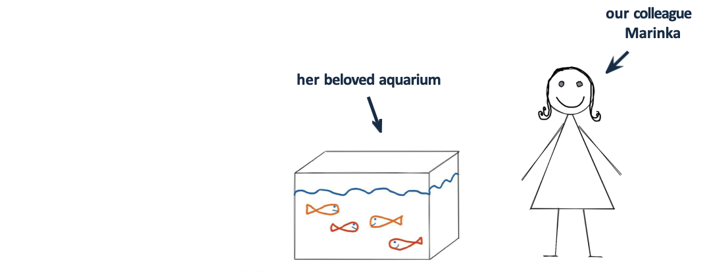
… there was a girl called Marinka
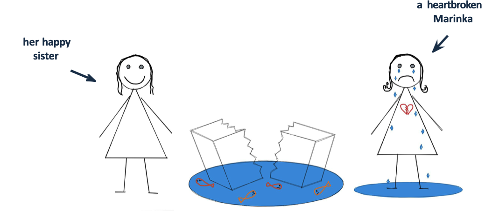
and Marinka was happy again
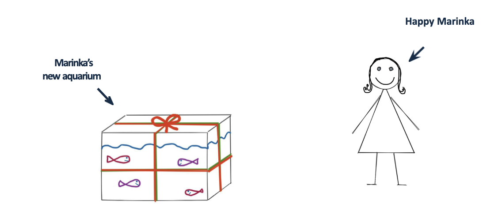
As the time passes by …
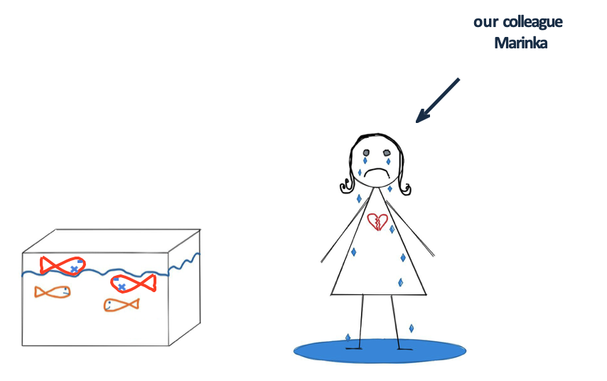
Idea
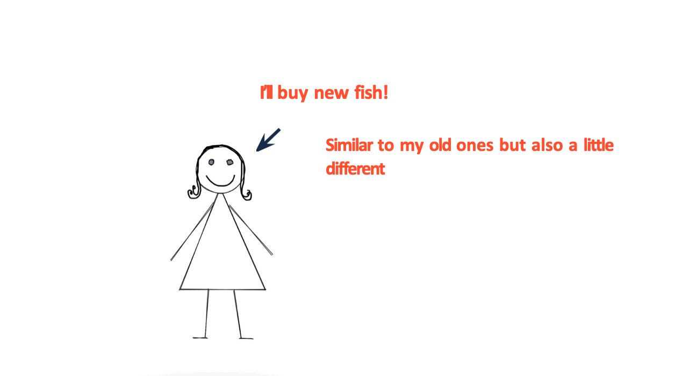
But
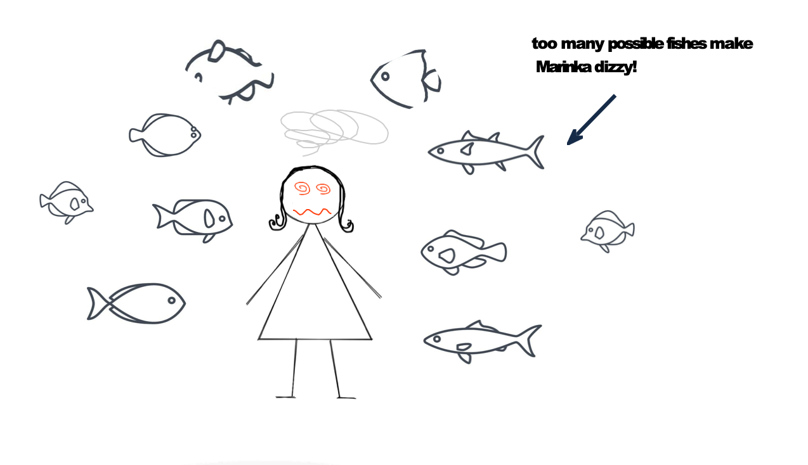
Recommender Engines#
What are Recommenders?#
Algorithms to find similar items and recommend them to user
Examples: Youtube, Amazon, Netflix and Spotify
Why Recommenders?#
User engagement: keep users on the platform
Personalization: tailor content to individual preferences
Revenue generation: increase sales through targeted recommendations
Data collection: gather user preferences for future improvements
Data Collection#
User data: user profiles, preferences, and behavior
implicit feedback (views, clicks, purchases)
explicit feedback (ratings, reviews)
Item data: item features, descriptions, and metadata
Types#
Content based
Collaborative filtering
Hybrid models
Content based model#
if the user liked/bought an item, recommend similar items.
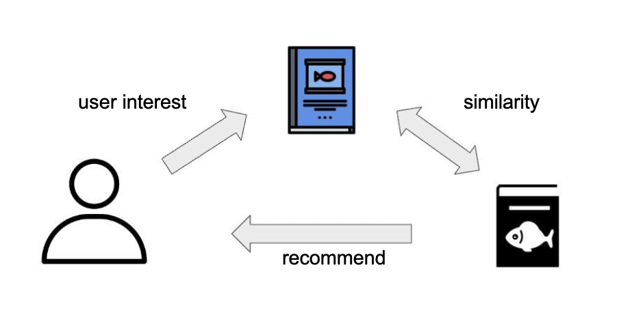
How to find similar Items?#
Similarity measure:
euclidian distance
pearson correlation
cosine similarity –> most used
Cosine similarity#
can take value between 1 and 0
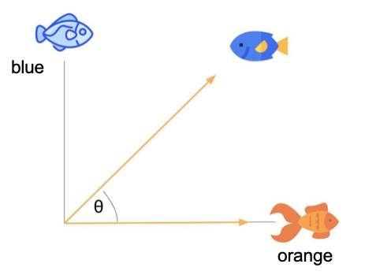
Cosine similarity#
Dot product of the vectors divided by the product of their lengths
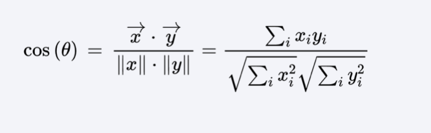
Example#
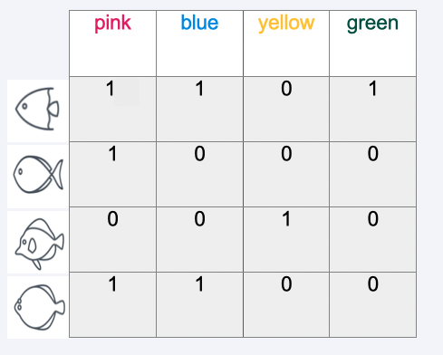
Calculation example#
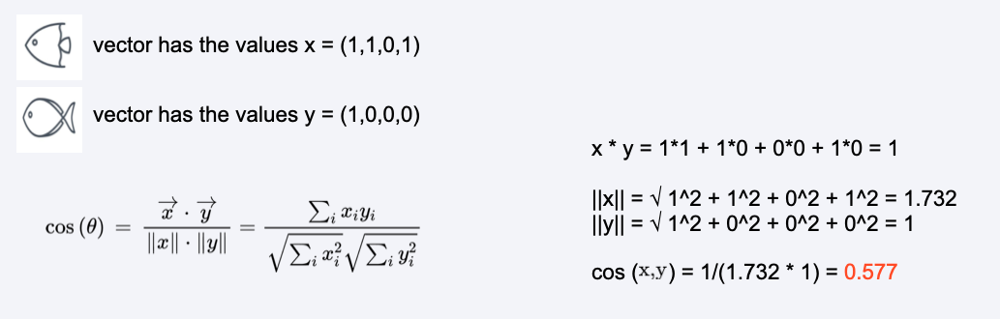
Similarity matrix#
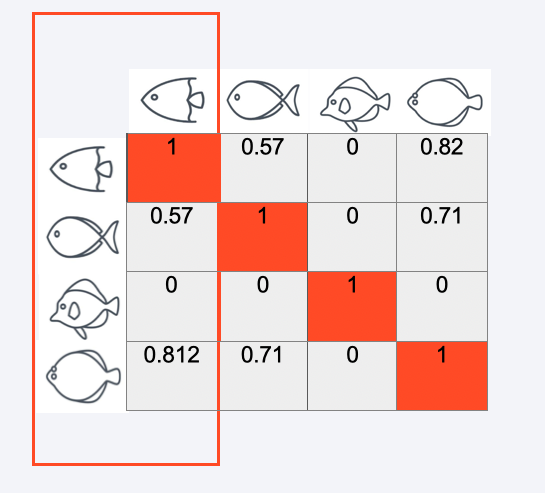
Outcome#
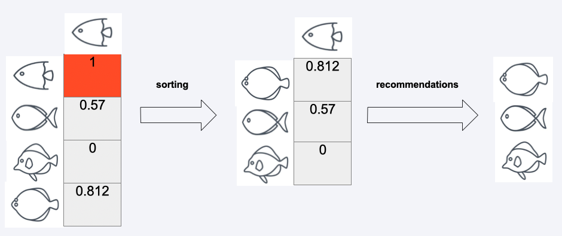
Collaborative filtering#
if user A and user B have similar tastes, recommend items that user B liked to user A.
Types:
item based
similarities between items based on user ratings
user based
similarities between users based on their ratings
User-Item-Rating Matrix#
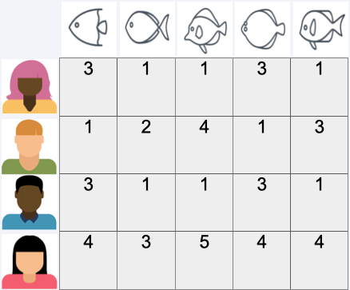
User-Item-Rating Matrix#
We usually deal with sparse matrices
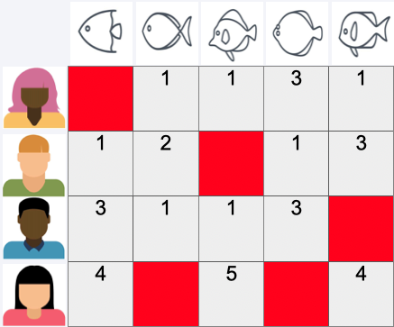
A simple user based Example#
We want to use the most similar user’s rating to predict rating of other user
calculate similarity matrix (e.g. Cosine, Pearson, Euclidean)
use most similar user to predict the rating
User-User-Similarity Matrix#
First we calculate the siimilarity matrix
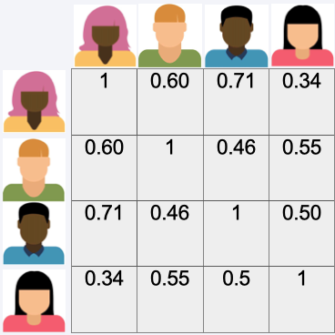
User-User-Similarity Matrix#
Then we look for the most simialar user
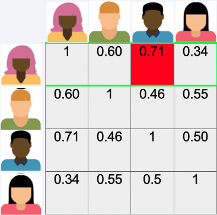
Predict Rating#
Then we use the rating of the most similar user to predict the rating
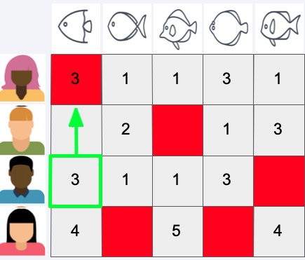
User-User-Similarity Matrix#
Again we look for the most similar user
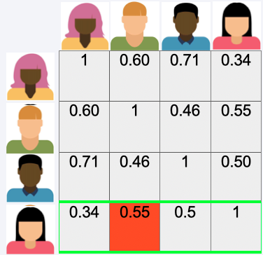
Predict Rating#
Then we use the rating of the most similar user to predict the rating
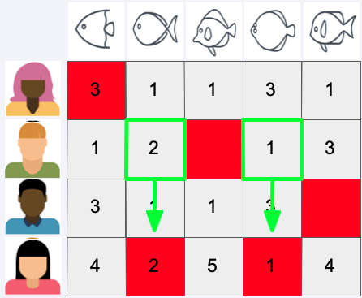
Predict Rating#
Do this for all users
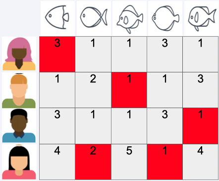
Recommend Item#
recommend highest rated item which was not rated before
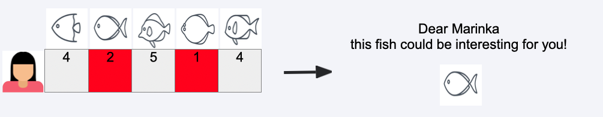
Model Based#
(A not so simple Example)
SVD - Singular Value Decomposition
Approximate Rating Matrix by product of three matrices
Latent features can often be interpreted (genre etc.)
Won the Netflix Prize
SVD#
Singular Value Decomposition
U - User–Feature Matrix:
Each row corresponds to a user, each column to a latent feature (hidden factor).
Example: A latent feature could represent a hidden preference dimension like “likes action movies” …
The values tell you how strongly each user relates to each latent feature.
Σ - Singular Values (Diagonal Matrix):
Contains the strengths (weights) of the latent features.
Larger singular values = more significant latent dimensions for explaining the data.
\(V^{T}\) - Feature–Item Matrix:
Each row corresponds to a latent feature, each column to an item.
The values indicate how strongly each item relates to each latent feature.
Example: An item might score high on the “action movie” factor and low on the “romantic comedy” factor.
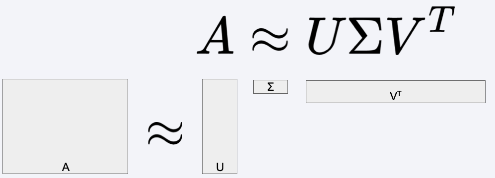
SVD#
How to predict the missing ratings
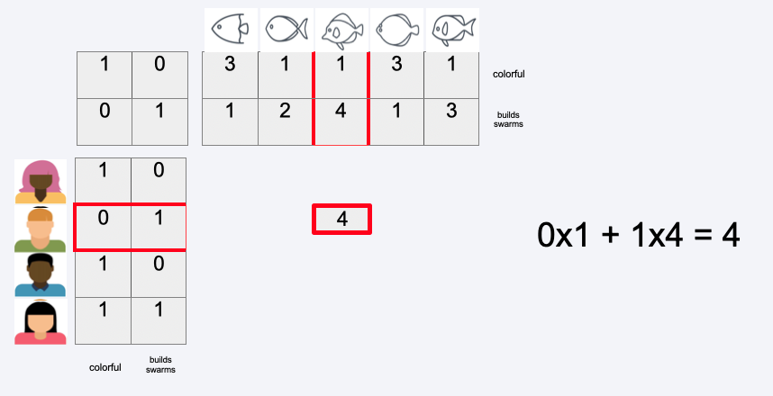
SVD#
How to predict the missing ratings
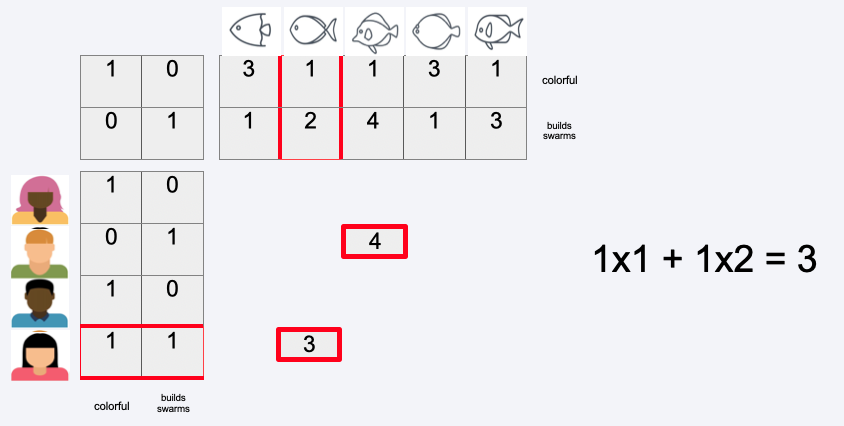
SVD#
How to predict the missing ratings
Optimal decomposition can be found using gradient descent
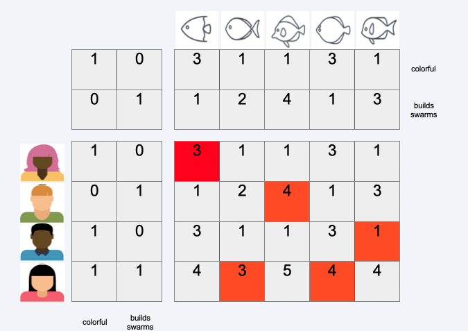
Recommend Item#
Recommend highest rated item which was not rated before
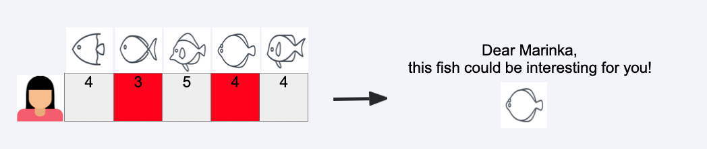
How to evaluate rrecommenders?#
Offline evaluation (for algorithm tuning):
Rating prediction accuracy:
RMSE (Root Mean Squared Error)
MAE (Mean Absolute Error)
Ranking quality:
Precision, Recall
MAP (Mean Average Precision)
diversity, novelty (how broad and varied the recommendations are)
Online evaluation (for validating the real effect on users and the business):
A/B testing pproach:
Split live users into groups:
Control: baseline system (e.g., popularity-based recommendations)
Treatment: new algorithm
Typical online metrics
CTR (Click-Through Rate)
Conversion rate (purchase, subscription, etc.)
Engagement time (session duration, items viewed)
Retention / churn rate
Revenue per user
Drawbacks of Recommenders#
Cold start problem: new users/items have no data
Sparsity: many items have few ratings, making it hard to find similar items/users
Scalability: large datasets can be computationally expensive
Bias: algorithms can reinforce existing biases in data